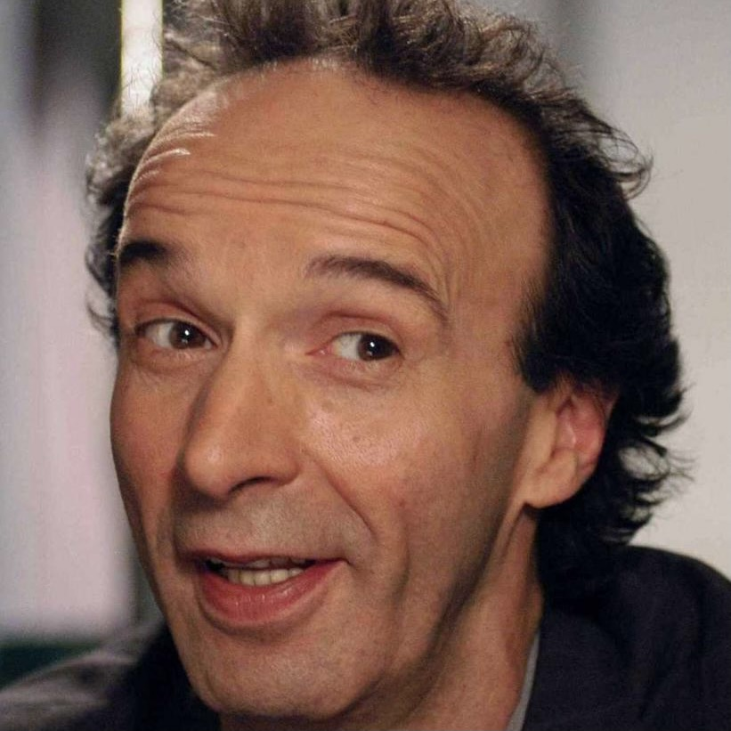
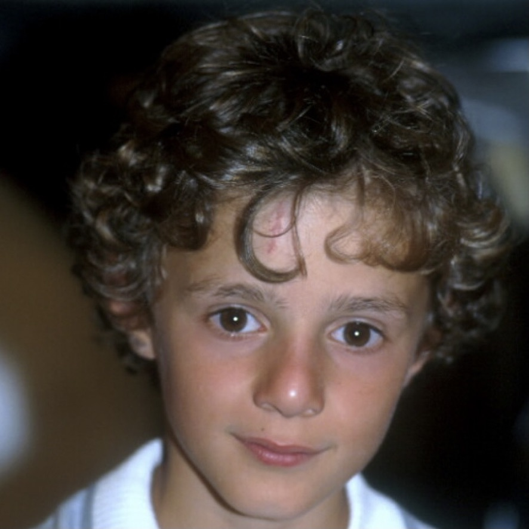

When an open-minded Jewish waiter and
his son become victims of the Holocaust, he uses a perfect
mixture of will, humor, and imagination to protect his
son from the dangers around their camp.
Main Cast

Roberto Benigni as Guido
Nicoletta Braschi as Dora

Giorgio Cantarini as Giosué
How many Oscars do you think this movie won?
Press the button to find out!
One Academy Award was given to La Vita è Bella for its original score, composed by Nicola Piovani. You can listen to it right here by pressing the play button!